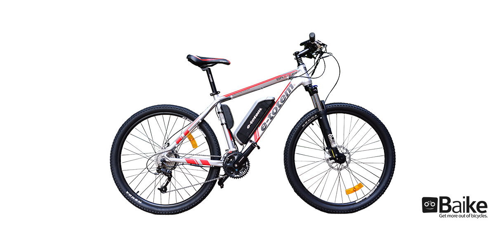
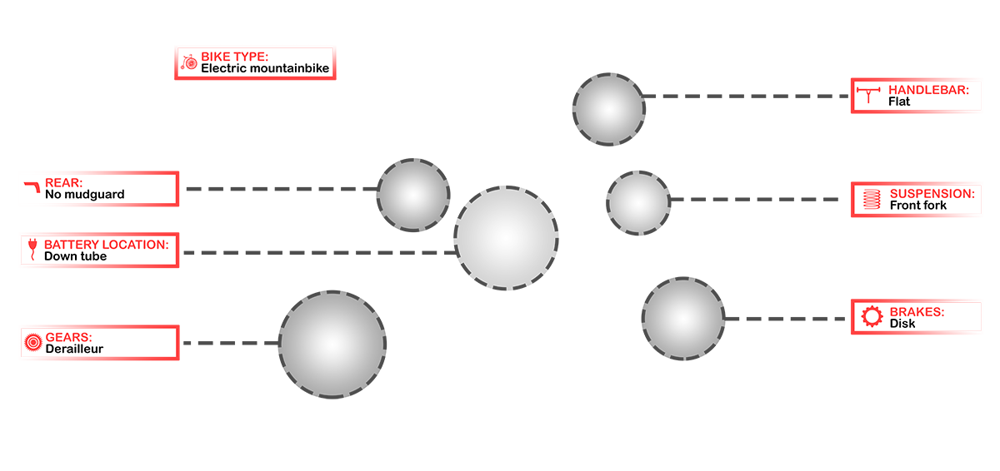

Enriched visual tagging
Baike creates a new dimension of connection between the customer and retailer. It uses the most recent technological innovations to increase the number of tags on all types of bicycles. High performing deep visual models analyse images to help finding the characteristics that the customer needs.

